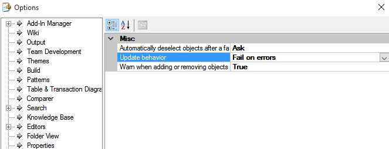

Update behavior is a Team Development property which allows determining what to do if the Update operation fails: keep those objects which were successfully Updated or make a Revert Operation of the entire Update. This property attempts to solve, for example, the following problem: A user has a Knowledge Base synchronised with a GeneXus Server instance and other user makes a huge Commit to the same GeneXus Server instance. The first user makes an Update of all the things the other user had committed. If for some reason, the Update fails for any object, the entire Update fails, making a Revert Operation in those objects which were successfully Updated and Merged. Values
AvailabilityThe Update behavior property it's available in the Team Development node of the Tool Tab at the GeneXus IDE (Tools -> Options -> Team Development).  |
| Backlinks |
| Update From GeneXus Server |
| Warn When Adding Or Removing Objects From Selection Property |